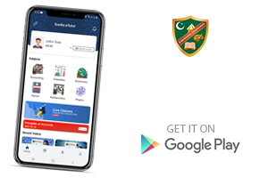
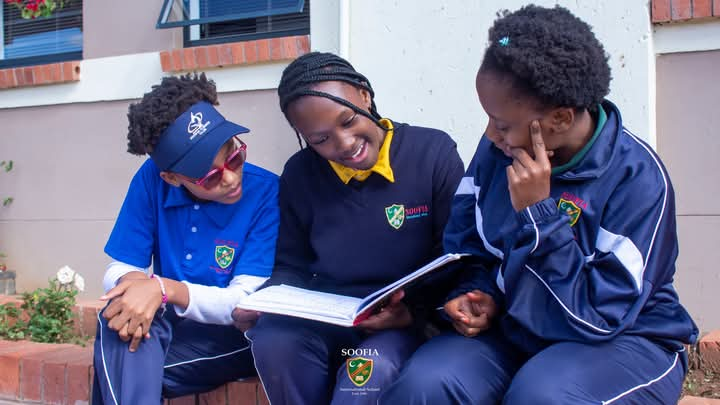

Soofia eTutor APP
Soofia eTutor is an online learning platform which provides engaging video lessons, across various subjects and topics designed to improve a student's understanding in a simple yet effective manner.
Flip Learning is "a type of interactive training where the learners carry out a number of intensive individual and group training activities, discussions and improvisation, rather than passively listen to a lecture or presentation". This is beneficial to today's learner as they are exposed to technology and social media. They are surrounded by vast amount of information on their finger tips; which allows for changes in methods of teaching. This group is called Gen Z; technology is practically their second-nature.
2026 Appilication Open
Soofia International School is pleased to announce that applications for January 2025 intake are open at all grades.
Admissions Soofia International School welcomes applications from students who are eager to learn, grow, and contribute to our diverse and inclusive community. Admissions Process Application: Submit a completed online application formalong with the required supporting documents. Assessment: Depending on the grade level, applicants may be invited to complete an assessment to determine their academic readiness. Interview: Shortlisted applicants will be invited for an interview with a member of our admissions team. Decision: Admission decisions will be communicated to families promptly.

FLIPPED LEARNING
A blended learning model where basic information about concepts is learnt by students at home and in the classroom they engage in much deeper discussions about the concepts.
At Soofia International School, we believe in fostering academic excellence, personal growth, and a sense of community. Our resolute faculty and staff are committed to nurturing well-rounded individuals equipped with the knowledge, skills, and values needed to thrive in the 21st century.
